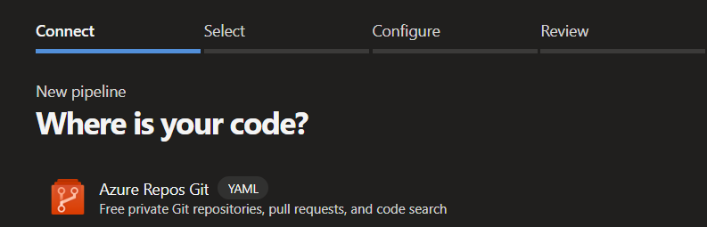
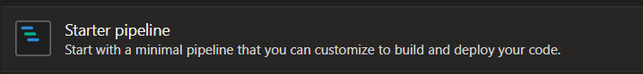

Azure DevOps and Azure DevOps Server¶
Authentication¶
First, create a Personal Access Token for the bot account. Let Renovate use your PAT by doing one of the following:
- Set your PAT as a
tokenin yourconfig.jsfile - Set your PAT as an environment variable
RENOVATE_TOKEN - Set your PAT when you run Renovate in the CLI with
--token=
Permissions for your PAT should be at minimum:
| Scope | Permission | Description |
|---|---|---|
Code |
Read & Write | Required |
Work Items |
Read & write | Only needed for link to work item |
Remember to set platform=azure somewhere in your Renovate config file.
Running Renovate in Azure Pipelines¶
Setting up a new pipeline¶
Create a brand new pipeline within Azure DevOps, and select your source: 
Then select your repository.
Within Configure your pipeline select: Starter pipeline 
Replace all content in the starter pipeline with:
schedules:
- cron: '0 3 * * *'
displayName: 'Every day at 3am (UTC)'
branches:
include: [main]
always: true
trigger: none
pool:
vmImage: ubuntu-latest
steps:
- task: npmAuthenticate@0
inputs:
workingFile: .npmrc
- bash: |
add-apt-repository ppa:git-core/ppa
apt update && apt install git -y
displayName: 'Install latest version of Git'
- bash: |
git config --global user.email 'bot@renovateapp.com'
git config --global user.name 'Renovate Bot'
npx --userconfig .npmrc renovate
env:
RENOVATE_PLATFORM: azure
RENOVATE_ENDPOINT: $(System.CollectionUri)
RENOVATE_CONFIG_FILE: $(Build.SourcesDirectory)/renovate_bot_config.json
RENOVATE_TOKEN: $(System.AccessToken)
LOG_LEVEL: debug
Create a .npmrc file¶
Create a .npmrc file in your repository:
registry=https://pkgs.dev.azure.com/YOUR-ORG/_packaging/YOUR-FEED/npm/registry/
always-auth=true
For the registry key, replace YOUR-ORG with your Azure DevOps organization and YOUR-FEED with your Azure Artifacts feed.
Create a config.js file¶
Create a config.js file in your repository:
module.exports = {
hostRules: [
{
hostType: 'npm',
matchHost: 'pkgs.dev.azure.com',
username: 'apikey',
password: process.env.RENOVATE_TOKEN,
},
],
repositories: ['YOUR-PROJECT/YOUR-REPO'],
};
For the repositories key, replace YOUR-PROJECT/YOUR-REPO with your Azure DevOps project and repository.
Using Azure DevOps internal API for pipeline tasks versions¶
Info
Renovate now uses the set of APIs that Azure provides to query the azure-pipelines tasks versions directly from the instance. Read pull request 32966 and discussion 24820 for more background information on this change.
To let Renovate use the Azure DevOps internal API, you must set these variables in your config:
platform=azureendpoint=$(System.CollectionUri), this is an Azure predefined variablehostRules.hostType=azure-pipelines-tasks
{
"platform": "azure",
"endpoint": "https://dev.azure.com/ORG_NAME",
"azure-pipelines": {
"enabled": true
},
"repositories": ["PROJECT_NAME/REPO_NAME"],
"prHourlyLimit": 0,
"baseBranchPatterns": ["main"],
"hostRules": [
{
"matchHost": "https://dev.azure.com/",
"hostType": "azure-pipelines-tasks"
}
],
"packageRules": [
{
"matchDatasources": ["azure-pipelines-tasks"],
"extractVersion": "^(?<version>\\d+)"
}
]
}
Yarn users¶
To do a successful yarn install you need to match the URL of the registry fully.
Use the matchHost config option to specify the full path to the registry.
module.exports = {
platform: 'azure',
hostRules: [
{
matchHost:
'https://myorg.pkgs.visualstudio.com/_packaging/myorg/npm/registry/',
token: process.env.RENOVATE_TOKEN,
hostType: 'npm',
},
{
matchHost: 'github.com',
token: process.env.RENOVATE_GITHUB_COM_TOKEN,
},
],
repositories: ['YOUR-PROJECT/YOUR-REPO'],
};
Put this in your repository's .npmrc file:
registry=https://myorg.pkgs.visualstudio.com/_packaging/myorg/npm/registry/
always-auth=true
Add renovate.json file¶
Additionally, you can create a renovate.json file (which holds the Renovate configuration) in the root of the repository you want to update.
Read more about the Renovate configuration options
Using a single pipeline to update multiple repositories¶
If you want to use a single Renovate pipeline to update multiple repositories you must take the following steps.
Add the names of the repositories to config.js.
Make sure that the "Project Collection Build Service (YOUR-PROJECT)" user has the following permissions on the repositories:
- Contribute
- Contribute to pull requests
- Create branch
- Read
The user must have the following permission at Project-level:
- View project-level information
Linking a work item to the Pull Requests¶
If you want Renovate to automatically link an existing work item to the Pull Requests, you can set the azureWorkItemId configuration.
Make sure the user has the following permissions on the work item's area path:
- Edit work items in this node
- View work items in this node
If the user does not have these permissions, Renovate still creates a PR but it won't have a link to the work item.
Adding tags to Pull Requests¶
Tags can be added to Pull Requests using the labels or addLabels configurations.
If the tag does not exist in the DevOps project, it will be created automatically during creation of the Pull Request as long as the user has the permissions at Project-level:
- Create tag definition
Otherwise, when a tag does not exist and the user does not have permission to create it, Renovate will output an error during creation of the Pull Request.
Open items¶
The below list of features were current when this page was generated on February 11, 2026.
Feature requests¶
- Support for vulnerabilityAlerts on Azure DevOps #33477
- Ability to add or update
azureWorkItemIdin existing PRs #32135 - Support changelogs from Azure DevOps #18324
- Allow configuration to be stored in
.azuredevops#10651 - Add connection check for Azure platform init #9593
- Support issues for Azure platform #9592